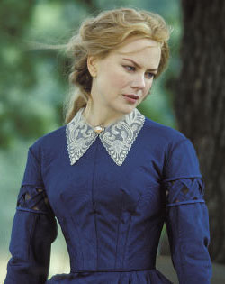

|
The assignment of University of Virginia professors Gary
Gallagher, Edward Ayers and Stephen Cushman was a tough one.
They were to judge the historical accuracy of what they've
just seen, a screening of Cold Mountain.
Director Anthony Minghella's take on the Civil War era is
a second-generation work of fiction, based as it is on
novelist Charles Frazier's 1997 best seller of the same
name.
Cold Mountain tells the story of a wounded Confederate
deserter named Inman (Jude Law) who turns his back on what

Director Anthony Minghella
on the set of Cold Mountain.
|
he has come to see as war's dehumanizing slaughter to trek
hundreds of miles home to the mountains of North Carolina
and to Ada (Nicole Kidman), the woman he loves but barely
knows.
Learning Laws of the Land
Inman's journey is intercut with the story of Ada and
Ruby (Renee Zellweger), a rural type who teaches her
city-bred friend how to survive in a harsh landscape made
harsher by war.
Frazier based Inman on an ancestor about whom little is
known. He deliberately set out to create a kind of American
odyssey -- which makes the historical question seem even
more dubious.
"I think Gone With the Wind has shaped what people
think about the Civil War probably more than everything
we've written put together, or put together and squared,"
Gallagher says. Nobody thinks this film will have that kind
of impact, but it will surely have more than his own work or
that of any other academic historian.
The screen version of Cold Mountain begins with a
powerful depiction of an especially horrific battle that
took place in 1864, during the siege of Petersburg.
"At the very beginning, when the Union army put all the
explosives underground, was that an actual event?" Ayers
asks.
The answer is: Yes, but.
Yes, Union engineers did tunnel under the Confederate
lines at Petersburg, and yes, they blew a big hole in them,
and yes, the Union troops who tried to capitalize on this
were pinned down and slaughtered in the enormous crater
created by the explosion. Along with other historians who've
had a chance to see Cold Mountain, Gallagher thinks this
sequence is one of the best evocations of Civil War combat
ever put on film. But as he is quick to note, one of the
keys to understanding the real Battle of the Crater is the
heavy involvement of African-American troops there.
And if you go looking for this story line, either in
Frazier's book or in the film, you will look in vain.
The Crater sequence occupies only a few minutes of the 2
1/2-hour film. Most of Cold Mountain is devoted to Inman's
temptations and bloody travails on his long walk home, and
to the depredations of the local posses known as the Home
Guard.
The broad context for all this is what Ayers, a historian
whose work has focused more on the home front than the
battlefield, refers to as the "backwash" of the Civil War.
And the first question from the audience goes straight to
the believability of Minghella's period evocation: Were the
members of the Home Guard really as brutal as the movie
shows them to be?
The answer is complicated.
"The war in western North Carolina got very, very nasty,"
Gallagher says. But "it's overdrawn in this movie, I think."
Home Guardsmen, whose mission included returning escaped
slaves to their masters and sending deserters back to the
rebel lines, mostly didn't go around "killing people
indiscriminately and torturing women." Ayers agrees, adding
that Cold Mountain seems to conflate the Home Guard with
what people at the time called "bushwhackers": violent,
opportunistic outlaws with no loyalty to either side.
But Columbia University historian Eric Foner, who has
also previewed the film, doesn't fully agree. He would never
call this or any other movie "accurate," Foner says. Yet he
notes that there was considerable Union sentiment in western
North Carolina and eastern Tennessee (a point not made in
Cold Mountain) and that the authorities there "did prey
very violently" on those deemed insufficiently loyal to the
South--which helps explain the bitter conflicts that
continued after the war. Thus he sees the film as
"illuminating something real."
Portrayal of Women
Next question: What about the way women are portrayed in
Cold Mountain?
Let's deal with the frivolous part first. The one thing
period experts seem to agree on is that even when Ada,
Kidman's character, is leading a hardscrabble life, she
looks far too good to be true. Zellweger wins Most
Believable Actress, hands down. Jude Law gets high marks for
scruffiness as well.
A more serious topic is the movie's seeming determination
to turn the Gone With the Wind stereotype of pro-war,
pro-slavery Southern womanhood on its head. "When you watch
|

Nicole Kidman in Cold
Mountain.
|
this film you have a sense that there are no white women in
the Confederacy who support the Confederate war effort,"
Gallagher says, but this is "a grotesque distortion." Ada is
supposed to be a transplanted Charleston belle, raised in
the heart of the slaveholding South, yet she's skeptical
about the war from the beginning, and practically the first
words out of her mouth establish her anti-slavery
sentiments. "What's wrong with that picture?" the historian
asks.
This brings the discussion around to what Ayers calls
"the great central problem of all of American history--
race and slavery."
And how did the filmmakers do on that one?
"They ducked," he says.
Yes, they ducked. They made slavery virtually invisible
in the mountains of North Carolina, which it was not. They
made all their major Southern characters sympathetic, or at
the very least silent, on the issue. They put unlikely
anti-slavery speeches into the mouths of minor Southern
characters, such as the doctor in the hospital where Inman
recovers, outside of which you see a tableau of
cotton-picking slaves for, oh, 30 seconds or so.
But Gary Gallagher, for one, doesn't think any of this
should come as a surprise.
"The Great Bugaboos"
"Americans are so uncomfortable with slavery," he says.
"Slavery and race are the great bugaboos for us in terms of
really coming to terms with our past. It's just so raw
still."
And to expect a commercial fiction film to confront raw
truths that American culture as a whole prefers to avoid
would be, well--unrealistic.
Still, it's good to be aware of what history chooses to
delete, even when it's the Hollywood kind.
So if you're planning to see this lovingly crafted
picture that does try to present an "accurate" picture of
the American past, it might be just as well to understand
what happened outside Petersburg on that awful July day in
1864.
What you need to know about the Union side of things is
this: After the decision had been made to tunnel under the
Confederate lines, a division of U.S. Colored Troops was
carefully trained to lead the assault. Among other things,
they were to attack to the left and right of the hole
created by the explosion. "Nobody was supposed to go into
it," says Chris Calkins, chief of interpretation at
Petersburg National Battlefield.
But at the last minute, Calkins says, the Union commander
decided to have untrained white troops lead the assault
instead.
Among the reasons given was the fear of political
repercussions in the North if things went badly and the
black troops were seen as being deliberately sent to be
slaughtered.
As it happened, however, they were thrown into the battle
anyway, after the tired and badly led whites -- who had
never been told that they were supposed to avoid the big
hole -- had poured into it and been pinned down.
So they still ended up with the highest rate of
casualties of any Union division in the fight.
Source: Bob Thompson in the Washington
Post (December 24, 2003), C01.
|